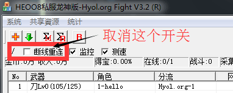
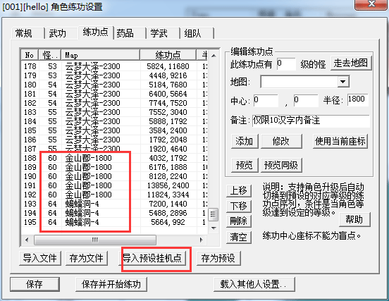
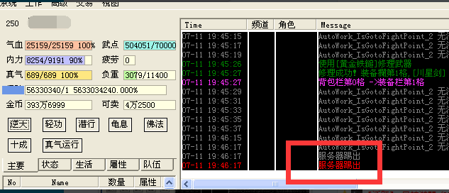
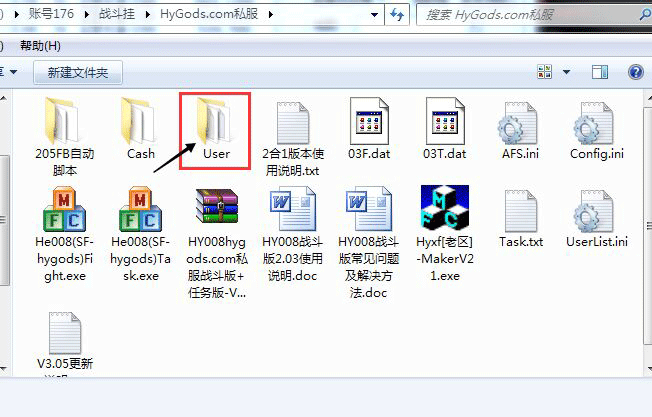
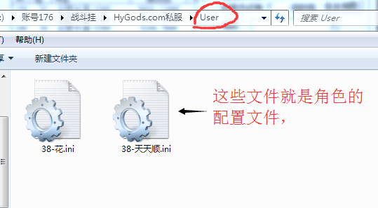
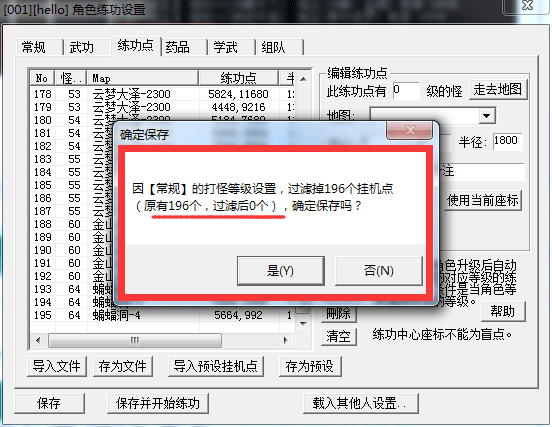
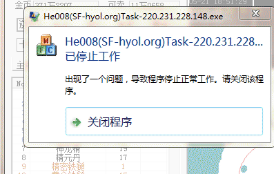
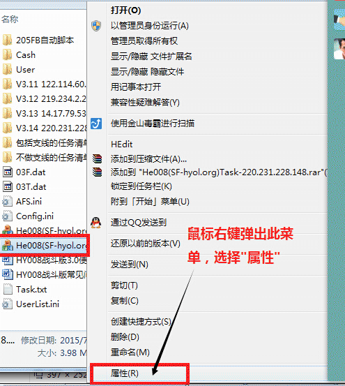
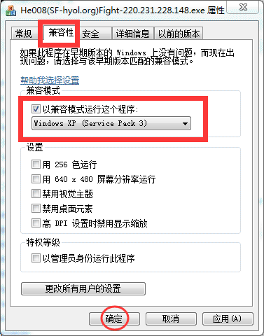
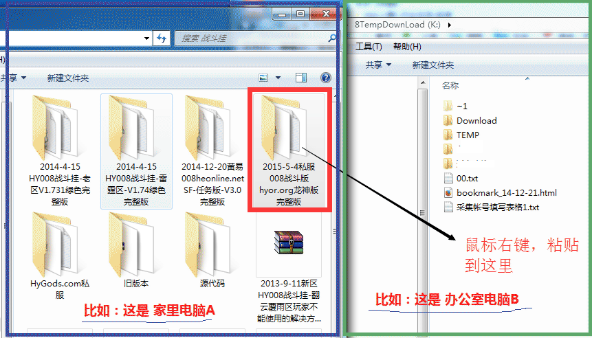

夫妻在线，但技能无法施展。
如果夫妻号在同一个008上挂机，将外挂上第一个号小退一下即可。
手动状态下，挂机点被改了
手动状态下，被怪攻击进入反击模式，会原地战斗，挂机点临时被更换了
1.如果此时在【角色菜单】->工作->战斗设置中去查看，肯定还是当前小圈圈挂机点。 不要紧，重新在【角色菜单】->工作->开始战斗即可，会恢复本来保存的设置。
如何停止工作
角色现在乱跑，我怎么才能让角色停下来？如何让角色停止工作，原地站着？
注意： 主控台最好把"断线重连"功能关闭，否则如果1分钟左右不动的话，角色又会重新开始默认战斗。
新号刚上线会乱跑
新号未设置，刚上线会乱跑，直接跑去金山打怪。
外挂有默认设置，默认的挂机点最高设置到了60级左右，所以新上挂的号上线后会自动判断挂机点，所以直接去金山了。
解决办法：
1.双击地图，可以停止当前动作，让角色停下来.
2.再进行挂机点设置。
设置好的号，一段时间不动，也会自己跑
如果你确定一个号呆在某地长时间不动，取消主控台的【断线重连】即可。但其他号卡住或者掉线则不会智能修复了。
或者让这个号直接经商，或打坐，或采集。
显示服务器踢出
原因有很多：
1. 偶尔出现的，可能是服务器问题，如果后面自己连上了就没事。掉线是正常的。
2. 此帐号未付费，或已经到期。008是付费才能使用的。
3. 付费账户，弄错了帐号补丁文件，比如帮朋友挂机，用朋友的帐号补丁，（这个并不是通用的，都要向我索取才行，你用别人的出问题会很多）。
4. 发现很多朋友只要有一点问题，就删掉008整个文件夹，然后又解压缩出来，结果忘记补丁要更新了，设置也丢了，反正我也想不出还有什么操作，总之就是瞎搞一通。
5. 某些人尝试破解。
解决办法：
从我发给你的外挂完整版里，单独把03*.dat文件解压缩出来，替换外挂当前的同名文件。
注意：
每个付费用户都是直接从我这里用QQ接收的完整版，里面的帐号已经包含了你的帐号，和别人的完整版不是一样的。
实在不行重新找我索要最新的帐号文件补丁。
我帮朋友挂机，又不想影响自己的设置，怎么弄？
 
各种密码保存在哪？
外挂记忆的各种密码在什么地方，我如何保管好隐私？
如何更新补丁
如果外挂更新了，怎么打补丁？
一般是替换某个文件，比如主程序，直接替换同名文件即可。
也可能是03.dat，03F.dat，03T.dat，也是直接替换同名文件即可。

注意，QQ接收这个文件可能会改名03F(1).dat之类，你替换时必须改成03F.dat，否则替换无效。替换之后，外挂重启，即可。
新设的挂机点老被过滤掉，无法保存

图中①角色等级是26级
图中②当前挂机范围内的怪物等级是16级，对应的挂机点设置中的怪物等级也要填写16
图中③寻怪设置：想打16级~35级的怪物
换句话说，就是想打比自己低10级的怪~比自己高9级的怪。
这个等级设置是相对的，和其他的外挂概念不同，优点是:
事先设置好各种等级的挂机点后， 可以随着角色的升级后自动更换挂机点
外挂崩溃



家里电脑弄好了，办公室电脑咋弄？
1.家里电脑上008外挂设置好了，可以正常使用了，但是办公室也想装，怎么弄？2.家里电脑上008外挂设置好了，可以正常使用了，但是还有一台电脑，怎么弄？
以上情况是一样的处理。
外挂是绿色版本即使重装系统，也无需设置照样使用，所以，建议HY008放在除C盘以外的盘符，尤其不建议放在桌面，严重影响电脑的性能。
解决如下：
把整个Hy008外挂文件夹复制到另一台电脑上，在新电脑上重新设置游戏客户端的路径就行了。
然后在新电脑上运行外挂，重新设置游戏客户端的路径即可。

游戏客户端更新
游戏客户端更新了，外挂不能用了，如果更新外挂？1、外挂主控台菜单->共享资源->清除所有缓存。
2、重启外挂，即可。